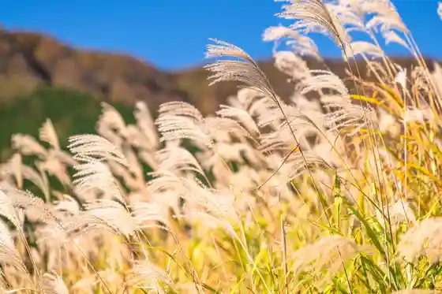
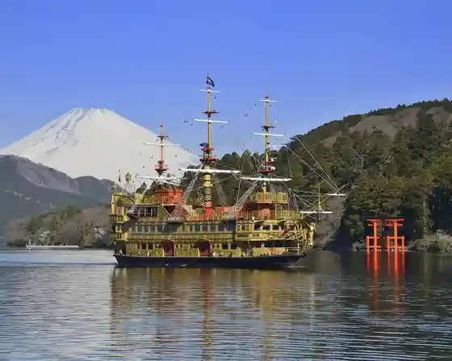
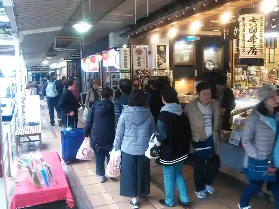
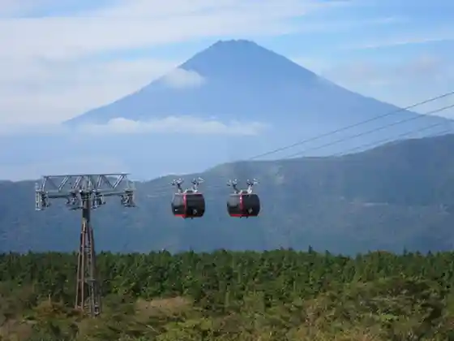

Sengokuhara Susuki Sogen
Hakone, Kanagawa · 0460-85-5700 · Official / source link

Hakone Kaizokusen (Hakone Kankosen)
Hakone, Kanagawa · 0460-83-7722 · Official / source link

Hakone Yumoto Ekimae Shopping Street
Hakone, Kanagawa · Official / source link

Hakone Ropuei
Hakone, Kanagawa · 0465-32-2205 · Official / source link

Owakudani Enchi
Hakone, Kanagawa · 0460-84-5201 · Official / source link
Tenzan Toji Sato
Hakone, Kanagawa · 0460-86-4126 · Official / source link
Hakone Komagagaku Ropue
Hakone, Kanagawa · Official / source link
Ashi no Mizumi
Hakone, Kanagawa · Official / source link
Hakone Shrine Kyu Atama Ryu Shrine
Hakone, Kanagawa · 0460-83-7123 · Official / source link
Hakone Gora Park
Hakone, Kanagawa · 0460-82-2825 · Official / source link
Chokoku no Mori Art Museum
Hakone, Kanagawa · 0460-82-1161 · Official / source link
Hakone Ashi no Mizumi Yuransen
Hakone, Kanagawa · 0460-83-6351 · Official / source link
Hakone Sono Aquarium
Hakone, Kanagawa · 0460-83-1151 · Official / source link
Hakone Garasu no Mori Art Museum
Hakone, Kanagawa · 0460-86-3111 · Official / source link
Hakone Kurafutohausu (Hakone Gora Koennai)
Hakone, Kanagawa · 0460-82-9210 · Official / source link
Hakone Shrine
Hakone, Kanagawa · 0460-83-7123 · Official / source link
Hakone Art Museum
Hakone, Kanagawa · 0460-82-2623 · Official / source link
Hakone Karakuri Art Museum
Hakone, Kanagawa · 0460-83-7826 · Official / source link
Hakone Rarikku Art Museum
Hakone, Kanagawa · 0460-84-2255 · Official / source link
Foresutoadobencha Hakone
Hakone, Kanagawa · Official / source link
Pora Art Museum
Hakone, Kanagawa · 0460-84-2111 · Official / source link
Owakudani Kurotamago Kan
Hakone, Kanagawa · 0460-84-9605 · Official / source link
Pora Art Museum - Mone Botsugo 100 Nen Kaikan 25 Shunen Kinen (Atarashii Me Mone to 21 Seiki no Ato) Ten
Hakone, Kanagawa · 0460-84-2111 · Official / source link
Hakone Kowaki Sono Yunessan
Hakone, Kanagawa · 0460-82-4126 · Official / source link
Kojiri Rinkan Chushajo
Hakone, Kanagawa · 045-681-0007 · Official / source link
Hatajuku Yosegi Hall
Hakone, Kanagawa · 0460-85-8170 · Official / source link
Moto Hakone Kyukaido Suginami Ki
Hakone, Kanagawa · Official / source link
Hakone Yosegi Saiku Senmonten Hakone Maruyama Bussan
Hakone, Kanagawa · 0460-83-6604 · Official / source link
Hakone Sekisho
Hakone, Kanagawa · 0460-83-6635 · Official / source link
Hakone Sono
Hakone, Kanagawa · 0460-83-1151 · Official / source link
Hakone Shissho Flower Garden
Hakone, Kanagawa · 0460-84-7293 · Official / source link
Tsubaki Line (Tsubaki Dai)
Hakone, Kanagawa · 0465-63-2111 · Official / source link
Roadside Station Hakone Toge
Hakone, Kanagawa · 0460-83-7310 · Official / source link
Taikan Yama
Hakone, Kanagawa · Official / source link
cu―mo Hakone
Hakone, Kanagawa · 0465-32-2205 · Official / source link
Hakone Yu Ryo
Hakone, Kanagawa · 0460-85-8411 · Official / source link
Kanagawa Prefectural Onshi Hakone Park
Hakone, Kanagawa · 0460-83-7484 · Official / source link
Hakone Sekisho Tabimono Go Kan
Hakone, Kanagawa · 0460-83-6355 · Official / source link
Okada Art Museum
Hakone, Kanagawa · 0460-87-3931 · Official / source link
Ashi no Mizumi Sukai Line
Hakone, Kanagawa · Official / source link
Foresutoadobencha Hakone / Odawara / Yokohama Kankojigyo Mono Muke UV
Hakone, Kanagawa · Official / source link
Narikawa Art Museum
Hakone, Kanagawa · 0460-83-6828 · Official / source link
Hakone Bushi no Sato Art Museum
Hakone, Kanagawa · 0460-84-8177 · Official / source link
Hakone Jio Museum
Hakone, Kanagawa · 0460-83-8140 · Official / source link
Hakone Ekiden Museum
Hakone, Kanagawa · 0460-83-7511 · Official / source link
Suiriku Ryoyo Fune NINJA BUS WATER SPIDER
Hakone, Kanagawa · 0460-83-1151 · Official / source link
Choan Tera
Hakone, Kanagawa · 0460-85-5700 · Official / source link
Fun Space Ashi no Mizumi Kyanpu Village Reikusaidovira
Hakone, Kanagawa · 0460-84-8279 · Official / source link
Ushi Nabe Ukon
Hakone, Kanagawa · 050-3160-4153 · Official / source link
Miyagino Hayakawa Tsutsumi Cherry Blossoms
Hakone, Kanagawa · 0460-85-5700 · Official / source link
Hakone Shashin Art Museum
Hakone, Kanagawa · 0460-82-2717 · Official / source link
Hakone Tozandensha Ensen (Ajisai Densha)
Hakone, Kanagawa · 0465-32-6823 · Official / source link
Hakone Mauntembaikukurujingu
Hakone, Kanagawa · 0460-84-9222 · Official / source link
Sai Heri -Saien
Hakone, Kanagawa · Official / source link
Komagagaku
Hakone, Kanagawa · 0460-83-1151 · Official / source link
Hakun Hora Cha En
Hakone, Kanagawa · Official / source link
Miya no Shita Shopping Street
Hakone, Kanagawa · 0460-82-3329 · Official / source link
Nikorai Baguman Hakone Garden Zu
Hakone, Kanagawa · 0460-83-9087 · Official / source link
Hiryu Falls
Hakone, Kanagawa · Official / source link
Amazake Chaya
Hakone, Kanagawa · 0460-83-6418 · Official / source link
Honma Yosegi Art Museum
Hakone, Kanagawa · 0460-85-5646 · Official / source link
Ashi no Lakeside (Wakasagi Tsuri & Wakasagi no Chushoku)
Hakone, Kanagawa · 0460-83-7361 · Official / source link
Hakone Kyu Atama Ryu Forest
Hakone, Kanagawa · Official / source link
Hakone Kyukaido
Hakone, Kanagawa · 0460-85-5700 · Official / source link
Kankyo Sho Hakone Bijita Center
Hakone, Kanagawa · 0460-84-9981 · Official / source link
Amimoto Oba
Hakone, Kanagawa · 0460-84-8984 · Official / source link
Hako Mine Domon
Hakone, Kanagawa · Official / source link
Kojiri Suimon
Hakone, Kanagawa · Official / source link
Murakami Jiro Shoten
Hakone, Kanagawa · 0460-85-6171 · Official / source link
NARAYA CAFE
Hakone, Kanagawa · 0460-82-1259 · Official / source link
Komagadakeyama Itadaki Fukin no Sanshobara
Hakone, Kanagawa · 0460-85-5700 · Official / source link
Ashi no Koshu Hen no Yamaboshi
Hakone, Kanagawa · 0460-85-5700 · Official / source link
Kintoki Yama
Hakone, Kanagawa · Official / source link
Hakone Yumoto Hotaru Park
Hakone, Kanagawa · 0460-85-7751 · Official / source link
Shojin Ike Shuhen
Hakone, Kanagawa · 0460-85-5700 · Official / source link
Chitose Hashi
Hakone, Kanagawa · Official / source link
Kai Sengokuhara
Hakone, Kanagawa · 050-3134-8092 · Official / source link
Sekibutsu Gun (Moto Hakone Sekibutsu Gun)
Hakone, Kanagawa · Official / source link
Hakone Sono Gorufu Ba
Hakone, Kanagawa · 0460-83-6555 · Official / source link
Happyaku Bikuni no Haka
Hakone, Kanagawa · Official / source link
Ue no
Hakone, Kanagawa · 0460-84-8471 · Official / source link
Kangagaku
Hakone, Kanagawa · Official / source link
Rikudo Jizo
Hakone, Kanagawa · Official / source link
Tada Mitsunaka no Haka
Hakone, Kanagawa · Official / source link
Kamiyama
Hakone, Kanagawa · 0460-85-7410 · Official / source link
Yudate Shishi Mai Sengokuhara
Hakone, Kanagawa · 0460-85-5700 · Official / source link
Asahi Hashi
Hakone, Kanagawa · Official / source link
Niju Go Bosatsu
Hakone, Kanagawa · 0460-85-5700 · Official / source link
Soga Kyodai Tora Omae no Haka
Hakone, Kanagawa · 0460-85-5700 · Official / source link
Yudate Shishi Mai Miyagino
Hakone, Kanagawa · 0460-85-5700 · Official / source link
Ocho Jizo
Hakone, Kanagawa · 0460-85-5700 · Official / source link